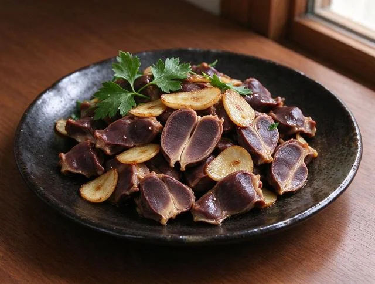

ちゃんと「いただく」方法
砂肝のにんにく焼き
にんにくを弱火で焼いてから、その油で砂肝を焼きます。取っておいたにんにくを最後に散らす、香りを楽しむ一皿です。

材料（2人分）
- 砂肝200g
- にんにく2片
- 油小さじ2
- 塩小さじ1/4
作り方
- 砂肝は左右に切り分け、厚いところに切り込みを入れる。
- 薄切りのにんにくを油と弱火にかけ、薄いきつね色で取り出す。
- 同じ油で砂肝を中火で焼く。中まで火を通して塩を振り、にんにくを散らす。
肉の火の通りは中心温度計で確かめます。最も厚いところの中心が75℃に達してから、1分以上加熱してください。 温度計で確かめるときは